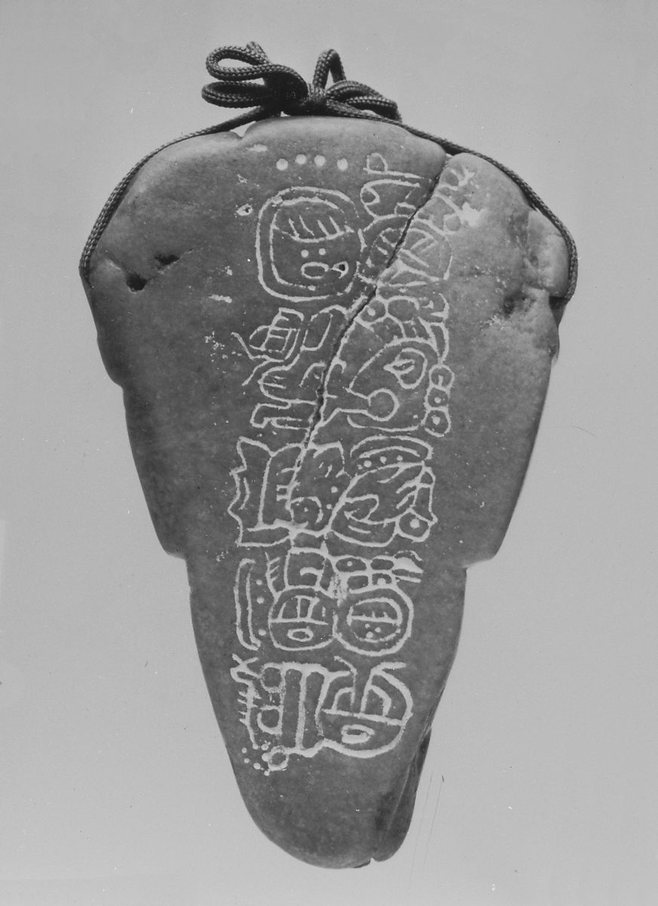

-

- 
Head Pendant
6th–9th century
A Maya sculptor created this triangular pendant from a large core of bright apple-green jadeite mined or found as a river cobble in the Motagua River Valley in what is now Guatemala. It depicts a human face wearing a zoomorphic headdress in the upper portion, and the lower portion may reference the snout of a crocodile as seen from above; note the protruding nostrils just below the chin of the face. The jaws of the creature in the headdress frame the rounded, conventionalized face, and the figure wears circular, adorned earflares. The artist sculpted the very hard jadeite with stone blades by incision, polishing, and the use of micro-drills with an abrasive and binding agent.
The reverse of the pendant contains an incised hieroglyphic inscription of ten signs arranged in five rows and two columns. The brief text commemorates two dates in the life of a ruler whose name eludes precise decipherment. The first, which refers to the accession as a “taking of the K’awiil scepter,” may have occurred in AD 695 or 747. The second date celebrates the 20-year anniversary of the ruler’s reign, either in AD 714 or 766. Perhaps a gift to the ruler mentioned on the text, or an heirloom cherished by his descendants, the pendant would have been a valuable centerpiece of royal regalia. The blue green color of the rare material refers to maize, agricultural fertility, and sacred water. The worn down surface of the text suggests that, rather than being a by-product of modern polishing, the smoothed surface may record the erosion caused by dozens of human hands experiencing the haptic pleasure of touching the cool jade over time.